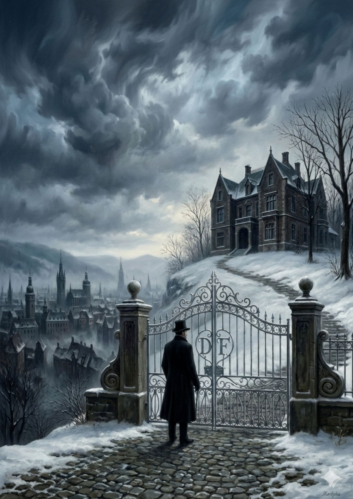
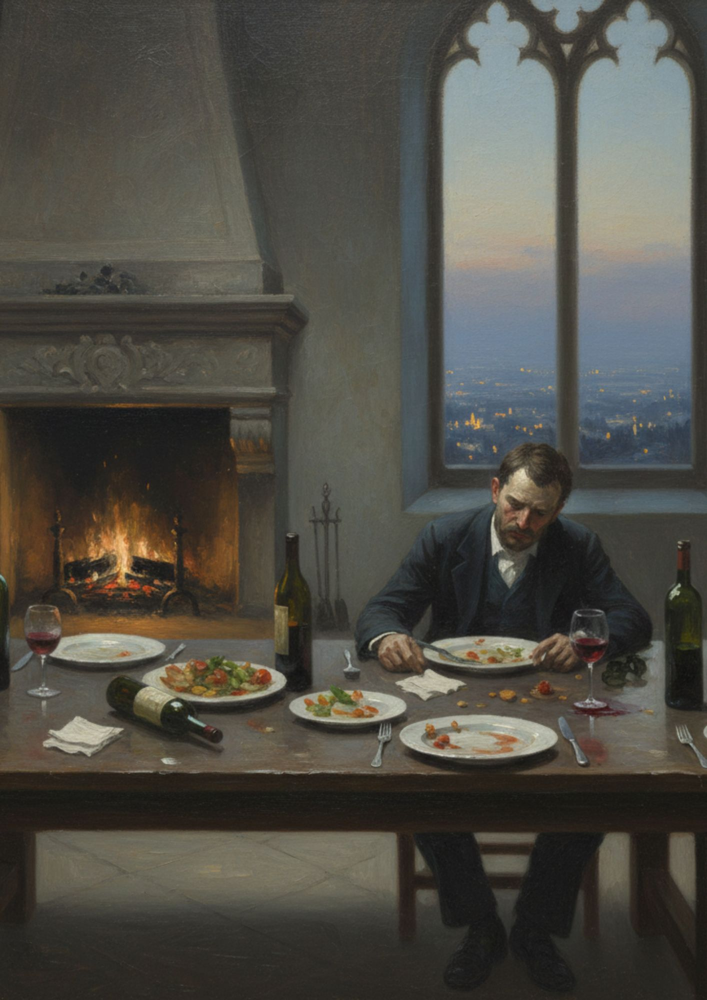
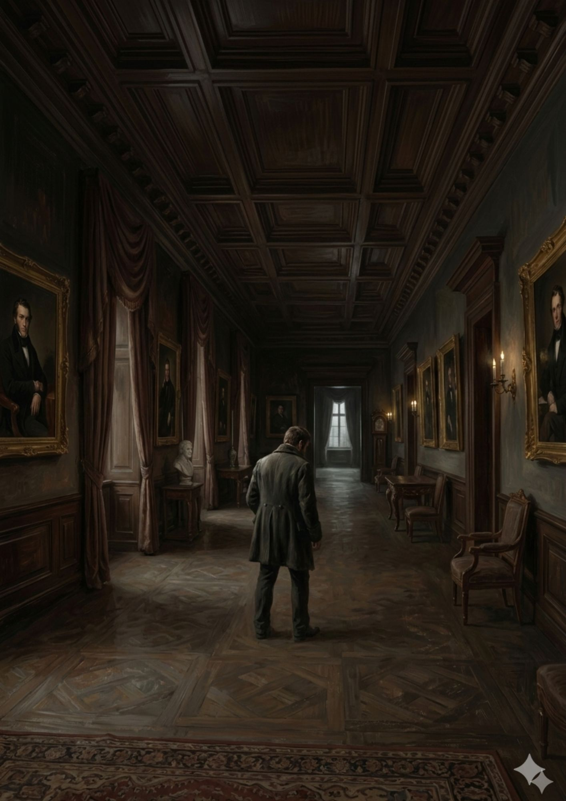
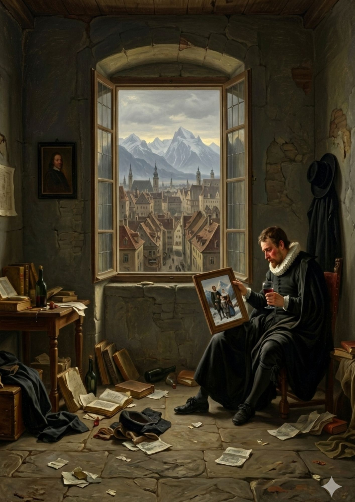
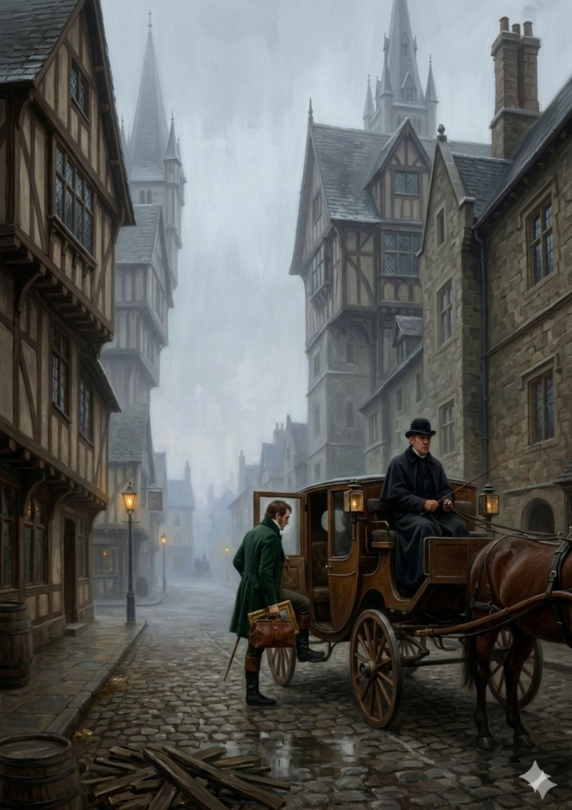
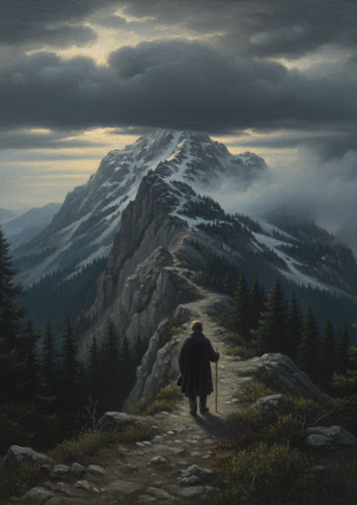
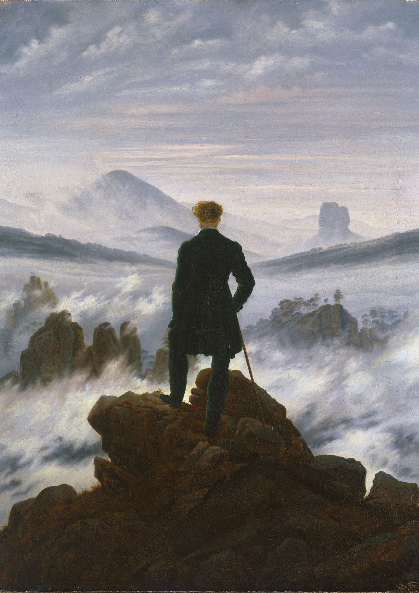

Il ferro battuto del cancello segna il confine di un mondo fatto di doveri e apparenze. Alle spalle, una città che brulica di una vita che non gli appartiene; davanti, il freddo silenzio di una ricchezza che non scalda il cuore. Qui vive un uomo che ha tutto, tranne un motivo per restare. Il cielo plumbeo riflette lo stato del suo spirito: una tempesta che non esplode mai, sospesa in un’eterna attesa.


C'è un peso insopportabile nella simmetria di questa stanza. Il fuoco arde nel camino, ma non c'è calore intorno al tavolo. Circondato da bottiglie che promettono un oblio temporaneo, l’uomo affoga la sua malinconia in un banchetto per uno. In questo vuoto, ogni sorso di vino è un tentativo di mettere a tacere il rumore assordante di una vita senza legami.
Camminare tra queste mura non significa scontrarsi con l'implacabile moltiplicazione del proprio io. Oro e velluto incorniciano decine di volti che portano il suo stesso nome, eppure nessuno di quei ritratti sembra conoscerlo davvero. Sono versioni di lui che hanno vissuto per il dovere, per il decoro, per la maschera della nobiltà.


Poi, nel disordine di una notte annebbiata dall'alcol, accade l'imprevisto. Tra vecchie carte e libri dimenticati, emerge un piccolo rettangolo di mondo vero: una foto di lui bambino, tra montagne che profumano di neve e braccia che sanno di amore. Non c’è oro in quella cornice, solo la ricchezza di un sorriso condiviso. È la scintilla che incendia il desiderio di tornare dove tutto ha avuto inizio.
L'addio non ha testimoni, se non la nebbia che avvolge le strade di ciottoli. Con una borsa e il cuore colmo di un'ansia nuova, il nobile abbandona il lusso soffocante. La carrozza lo attende come un vascello pronto a salpare verso una terra dimenticata. Non è più un uomo che scappa, ma un viaggiatore che insegue un ricordo che sta finalmente diventando realtà.


La città è ormai un'eco lontana. Qui, l'aria è sottile e pungente, e la terra si innalza per toccare le nuvole. L’uomo sfida la salita, piccolo di fronte all'immensità della roccia e dei pini. Ogni passo verso la vetta è un atto di spoliazione: i titoli cadono, la ricchezza svanisce, e resta solo un uomo e la sua determinazione. La montagna lo osserva, severa e magnifica.
Infine, la meta. Non è solo la cima di una roccia, ma il punto in cui il cielo e la terra si confondono. Davanti a lui, il mare di nebbia nasconde le valli e rivela l'eterno. In questo momento di pura estasi, il viandante capisce che la vera nobiltà non risiede nel possesso, ma nella capacità di perdersi di fronte alla grandezza del creato. Il suo viaggio è finito, la sua vita è appena iniziata.
